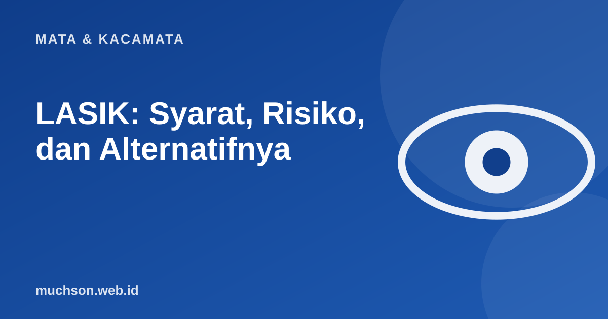

Beranda › Artikel › Mata & Kacamata
Mata & KacamataLASIK: Syarat, Risiko, dan Alternatifnya
Banyak orang bosan berkacamata dan bertanya soal LASIK. Prosedur ini sudah luas dipakai, tetapi bukan untuk semua orang dan bukan tanpa risiko. Artikel ini membantu Anda menyiapkan pertanyaan yang tepat untuk dokter spesialis mata.

Apa yang dilakukan LASIK?
LASIK membentuk ulang kelengkungan kornea dengan laser, sehingga cahaya yang masuk terfokus tepat di retina. Pada mata minus, bagian tengah kornea dibuat lebih datar. Pada plus, dibuat lebih curam, dan pada silinder, kelengkungannya diratakan. Untuk menjangkau lapisan dalam kornea, dokter membuat lapisan tipis (flap) lalu mengangkatnya sebelum laser bekerja.
Siapa yang biasanya memenuhi syarat?
- Biasanya usia dewasa (umumnya di atas 18 tahun), dengan ukuran kacamata yang stabil minimal satu tahun.
- Ketebalan dan bentuk kornea memadai dan sehat.
- Tidak sedang hamil atau menyusui.
- Tidak memiliki kondisi mata atau penyakit tertentu yang mengganggu penyembuhan.
- Memiliki harapan realistis: tujuannya mengurangi ketergantungan pada kacamata, bukan jaminan penglihatan sempurna.
Risiko dan efek samping yang perlu ditanyakan
| Hal | Penjelasan |
|---|---|
| Mata kering | Cukup umum setelah operasi, biasanya membaik, kadang menetap |
| Silau dan halo di malam hari | Bisa terjadi, terutama pada pupil lebar |
| Koreksi berlebih atau kurang | Mungkin perlu penyesuaian atau prosedur lanjutan |
| Minus kembali muncul | Bila bola mata masih berubah, atau pada sebagian orang seiring waktu |
| Komplikasi flap atau infeksi | Jarang, tetapi mungkin terjadi |
Alternatifnya
LASIK tidak mencegah presbiopi. Setelah usia sekitar 40 tahun, kacamata baca tetap mungkin diperlukan. Ini perlu Anda ketahui sebelum memutuskan.